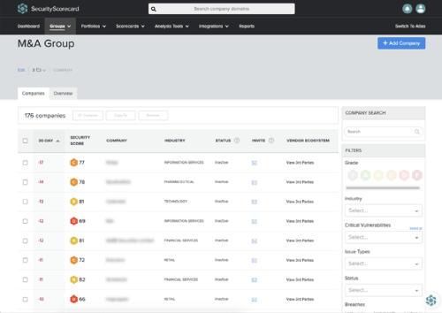

<!DOCTYPE html>
<html lang="zh-TW">
    <head>
        <meta charset="utf-8"><script async src="https://www.googletagmanager.com/gtag/js?id=G-TG1WB7W2Y3"></script>
<script>
    window.dataLayer = window.dataLayer || [];
    function gtag(){dataLayer.push(arguments);}
    gtag('js', new Date());
    gtag('config', 'G-TG1WB7W2Y3');
</script>
        <meta http-equiv="X-UA-Compatible" content="IE=edge">
        <meta name="viewport" content="width=device-width, initial-scale=1.0">
        <title>資訊安全治理首選廠商-MOC資安監控管理維運系統- uniXecure智慧資安科技</title>
    <link rel="icon" href="favicon.ico"><script defer src="javascript/main.js?f290b205"></script><link href="css/style.css?d62e308a" rel="stylesheet"></head>
    <body>        
        <!-- main starts -->
        <main class="main d-flex flex-column">
            <!-- headerc starts -->
            <header class="header">
                <nav>
                    <div class="wrapper">
                        <div class="logo">
                            <a href="index.html"></a>
                        </div>
                        <div class="navbar">
                            <ul>
                                <li>
                                    <a href="#">關於我們 <i class="fa-thin fa-angle-down"></i></a>
                                    <div class="dropdown-menu">
                                        <span class="d-lg-none d-inline-block mb-3 menu-back"><i class="fa-solid fa-angle-left"></i> Back</span>
                                        <div class="d-flex my-lg-5 my-0">
                                            <div class="mr-lg-5 mr-0">
                                                <p class="mb-3">關於我們</p>
                                                <ul>
                                                    <li><a href="Introduction.html">公司簡介</a></li>
                                                    <li><a href="solution-white-paper.html">解決方案白皮書</a></li>
                                                </ul>
                                            </div>
                                        </div>
                                    </div>
                                </li>
                                <li>
                                    <a href="#">獨家品牌 <i class="fa-thin fa-angle-down"></i></a>
                                    <div class="dropdown-menu">
                                        <span class="d-lg-none d-inline-block mb-3 menu-back"><i class="fa-solid fa-angle-left"></i> Back</span>
                                        <div class="d-flex my-lg-5 my-0">
                                            <div class="mr-lg-5 mr-0">
                                                <p class="mb-3">資安監控維運中心</p>
                                                <ul>
                                                    <li><a href="serve-moc.html">MOC 資安監控維運中心</a></li>
                                                </ul>
                                                <p class="mb-3">端點防護</p>
                                                <ul>
                                                    <li><a href="serve-sivas.html">SIVAS 資安弱點通報系統</a></li>
                                                    <!-- <li><a href="edr.html">EDR 端點資安管控監管平台</a></li> -->
                                                    <!-- <li><a href="ssc.html">SSC 政府組態基準檢測系統</a></li> -->
                                                </ul>
                                                <p class="mb-3">中心端監控</p>
                                                <ul>
                                                    <li><a href="serve-srmas.html">SRMAS 系統資源監控管理平台</a></li>
                                                    <!-- <li><a href="soc.html">SOC 資通安全威脅偵測管理</a></li> -->
                                                    <li><a href="serve-lucas.html">LUCAS 跡證保存系統</a></li>
                                                </ul>
                                            </div>
                                            <div class="mr-lg-5 mr-0">
                                                <p class="mb-3">人員資安意識： HEIS 資安意識人因分析系統</p>
                                                <ul>
                                                    <li><a href="serve-heis.html">HEIS 資安意識人因分析系統</a></li>
                                                    <li><a href="serve-sesc.html">SESC 次世代郵件安全雲</a></li>
                                                </ul>
                                                <p class="mb-3">資安服務</p>
                                                <ul>
                                                    <li><a href="serve-cse.html">資安健診</a></li>
                                                </ul>
                                            </div>
                                        </div>                                       
                                    </div>
                                </li>
                                <li><a href="agent-products-index.html" class="active">代理產品</a></li>
                                <li>
                                    <a href="#">最新消息 <i class="fa-thin fa-angle-down"></i></a>
                                    <div class="dropdown-menu">
                                        <span class="d-lg-none d-inline-block mb-3 menu-back"><i class="fa-solid fa-angle-left"></i> Back</span>
                                        <div class="d-flex my-lg-5 my-0">
                                            <div class="mr-lg-5 mr-0">
                                                <p class="mb-3">最新消息</p>
                                                <ul>
                                                    <li><a href="news.html">最新消息</a></li>
                                                    <!-- <li><a href="video.html">影音專區</a></li> -->
                                                </ul>
                                            </div>
                                        </div>
                                    </div>
                                </li>
                                <li><a href="contact.html">聯絡我們</a></li>
                            </ul>
                        </div>
                    </div>
                    <div class="login-language d-flex align-items-center">
                        <!-- <a href="#" class="link-outline-primary">登入/註冊</a> -->
                        <a href="#" class="link-members-only"><i class="fa-solid fa-user"></i> 會員專區</a>
                        <div class="language-container">
                            <a href="#" class="language-btn ml-3 fa-sharp fa-solid fa-globe"></a>
                            <ul class="language">
                                <li><a href="index.html" class="active">繁體中文</a></li>
                                <li><a href="index-en.html">English</a></li>
                                <li><a href="index-ja.html">日本語</a></li>
                            </ul>
                        </div>
                        <a href="#" class="toggle-navbar ml-3 fa-solid fa-bars"></a>
                    </div>
                </nav>
            </header>
            <!-- headerc ends -->
            <!-- content starts -->
            <div class="content flex-grow-1">
                <!-- agent products banner starts -->
                <section class="agent-products-content-banner agent-products-banner">
                    <div class="container">
                        <div class="row">
                            <div class="col-12 mt-3">
                                <div class="d-sm-flex d-block justify-content-between align-items-center">                                    
                                    <ul class="breadcrumb mb-0">
                                        <li class="breadcrumb-item"><a href="index.html">首頁</a></li>
                                        <li class="breadcrumb-item"><a href="agent-products-index.html">代理產品</a></li>
                                        <li class="breadcrumb-item">SecurityScorecard</li>
                                        <li class="breadcrumb-item active text-primary">SecurityScorecard TPRM 啟動第三方風險管理機制</li>
                                    </ul>
                                    <div class="agent-products-class">
                                        <span class="agent-products-text-gradient-4">網路傳遞安全</span>
                                    </div>
                                </div>
                            </div>
                            <div class="col-12">
                                <article class="mx-auto text-center">
                                    <figure class="my-4">
                                        
                                    </figure>
                                    <h1>SecurityScorecard TPRM<br />啟動第三方風險管理機制</h1>
                                    <p class="my-4 lh-lg">若要避免網路安全入侵（通常可以追溯到供應鏈漏洞），您所能做的最重要事情，就是開始使用第三方風險管理 (TPRM) 方案。制定一套可行的方案來評估第三方和供應商的風險，可立即產生重大影響。SecurityScorecard 提供強大的自動化解決方案，能讓資安團隊無需增加預算和人員編制，即可管理不斷增長的第三方生態系統。
                                        </p>
                                    <a href="contact.html" class="link-primary">了解方案</a>
                                </article>
                            </div>
                        </div>
                    </div>    
                </section>
                <!-- agent products banner ends -->
                <!-- agent products contant starts -->
                <section class="section bg-gray-50">
                    <div class="container">
                        <div class="row">
                            <div class="col-12">
                                <h2 class="text-center text-primary-800 mb-5">第三方風險管理 (TPRM) 方案能夠針對第三方及他們的數位環境，為貴公司提供識別、監控及管理其中網路安全風險的相關功能。</h2>
                                <div class="agent-products-content-img">
                                    <figure class="text-center">
                                        
                                        <figcaption >供應商、服務供應商、一級或下游和相關的廠商<br />雲端供應商、承包商、物聯網裝置、併購標的</figcaption>
                                    </figure>
                                </div> 
                            </div>
                        </div>
                    </div>
                </section>
                <section class="section service-content-circle-bg">
                    <div class="service-content-circle-bg-two"></div>
                    <div class="container">
                        <div class="row">
                            <div class="col-12">
                                <h2 class="text-primary-800 text-center mb-5">簡化 TPRM 生命週期的重要階段：</h2>
                            </div>
                            <div class="col-md-6 mb-4">
                                <div class="bg-white h-100 rounded-1 py-4 px-3 text-center d-flex flex-column justify-content-center align-items-center">
                                    <h2 class="text-primary mb-3">1. 供應商上線</h2>
                                    <p>建立整個企業範圍的流程，以引入新的潛在供應商（例如在採購期間）立即評級供應商的安全性，以判斷他們是否為永續型合作夥伴，並相應地排列出修補措施的優先順序。</p>
                                </div>
                            </div>
                            <div class="col-md-6 mb-4">
                                <div class="bg-white h-100 rounded-1 py-4 px-3 text-center d-flex flex-column justify-content-center align-items-center">
                                    <h2 class="text-primary mb-3">2. 供應商評估</h2>
                                    <p>將由外而内的評級資料與由內而外的調查問卷資料進行比對，以 360 度全方位檢視風險所在。細分大型供應商的數位足跡，以深入了解與您資料安全相關的確切資產和下屬機構。</p>
                                </div>
                            </div>
                            <div class="col-md-6 mb-4">
                                <div class="bg-white h-100 rounded-1 py-4 px-3 text-center d-flex flex-column justify-content-center align-items-center">
                                    <h2 class="text-primary mb-3">3. 供應商問題管理</h2>
                                    <p>透過您首選的通訊管道來觸發警示並自動產生修補計畫，以快速識別及解決問題。邀請供應商檢視他們的計分卡，並交回自訂改善計畫以提高他們的評級。</p>
                                </div>
                            </div>
                            <div class="col-md-6 mb-4">
                                <div class="bg-white h-100 rounded-1 py-4 px-3 text-center d-flex flex-column justify-content-center align-items-center">
                                    <h2 class="text-primary mb-3">4. 供應商調查問卷</h2>
                                    <p>大規模傳送、管理、完成及審查調查問卷。使用機器學習驅動技術，將所儲存的證據內容自動填入問卷中並驗證回覆答案，可以將供應商評估週期縮短 83%。</p>
                                </div>
                            </div>
                            <div class="col-md-6 mb-4">
                                <div class="bg-white h-100 rounded-1 py-4 px-3 text-center d-flex flex-column justify-content-center align-items-center">
                                    <h2 class="text-primary mb-3">5. 持續監控</h2>
                                    <p>持續掃描攻擊面，以快速識別第三方數位環境中的風險在您的生態系統中搜尋 CVE，搶先在漏洞被威脅執行者利用之前及早發現並修補漏洞。</p>
                                </div>
                            </div>
                            <div class="col-md-6 mb-4">
                                <div class="bg-white h-100 rounded-1 py-4 px-3 text-center d-flex flex-column justify-content-center align-items-center">
                                    <h2 class="text-primary mb-3">6. 可行的商業情報</h2>
                                    <p>快速提取董事會級報告，其中顯示隨著時間變化在策略安全性和合規性方面的表現，以便您掌握進度、督促各方執行安全計畫。善用來自可信賴的威脅情報合作夥伴和行業標準 SIEM 與 VRM 平台的整合訊號</p>
                                </div>
                            </div>
                        </div>
                    </div>
                </section>
                <section class="section">
                    <div class="container">
                        <div class="row">
                            <div class="col-12">
                                <article>
                                    <div class="agent-products-content-img mb-4">
                                        <figure class="text-center">
                                            
                                            <figcaption >使用 Groups 了解整個產品組合中的任務關鍵總體風險，並對高風險的供應商執行大量動作。</figcaption>
                                        </figure>
                                    </div> 
                                    <h2 class="text-primary-800 mb-3">為什麼選擇 SecurityScorecard</h2>
                                    <h4 class="text-secondary-500 mb-2">完整可見度</h4>
                                    <p class="mb-4">每天掃描全球 IP 空間，以發現及管理影子 IT 和未修補的 CVE，並依照需求評級任何實體。</p>
                                    <h4 class="text-secondary-500 mb-2">可行的安全情報</h4>
                                    <p class="mb-4">獲得的不僅僅是分數，SecurityScorecard 還會提供網路風險的情境脈絡和歸因。</p>
                                    <h4 class="text-secondary-500 mb-2">持續監控</h4>
                                    <p class="mb-4">持續監控填補了在固定時間點進行評估的可視化差距，因此您永遠都能掌握任何供應商的安全狀況。</p>
                                    <h4 class="text-secondary-500 mb-2">大規模執行 TPRM</h4>
                                    <p class="mb-4">使用整合工具來進行協作和工作流程自動化，有助於團隊在不增加員工人數的情況下，仍能快速解決資安問題、規劃修補措施、監控更多公司。</p>
                                    <h4 class="text-secondary-500 mb-2">一個平台</h4>
                                    <p class="mb-4">業界唯一完全整合的資安評級與供應商評估解決方案。</p>
                                    <h4 class="text-secondary-500 mb-2">自訂報告</h4>
                                    <p class="mb-4">自訂報告功能可讓資安團隊和高階主管團隊深入了解對業務影響最大的風險領域。</p>
                                    <h4 class="text-secondary-500 mb-2">強大的自動化工具</h4>
                                    <p class="mb-4">消除機械化任務，使得風險管理員能夠專注於執行更高價值的風險緩解策略。</p>
                                    <div class="agent-products-content-img mb-4">
                                        <figure class="text-center">
                                            
                                            <figcaption >Atlas 能讓您將 SecurityScorecard 評級與 Atlas 中的各個問題進行比對，以即時驗證問卷回覆。</figcaption>
                                        </figure>
                                    </div> 
                                    <div class="agent-products-content-img">
                                        <figure class="text-center">
                                            
                                            <figcaption >使用規則產生器來觸發關鍵工作流程，以便在計分卡發生重要變化時（例如回報發生違規事件）自動執行指定動作。</figcaption>
                                        </figure>
                                    </div> 
                                </article>
                            </div>
                        </div>
                    </div>
                </section>
                <!-- agent products contant ends -->
            </div>
            <!-- content ends -->
            <!-- footer starts -->
            <footer class="footer">
                <!-- contact starts -->
                <section class="footer-contact">
                    <div class="container">
                        <div class="row">
                            <div class="col-12">
                                <h1 class="text-right d-none d-md-block">Contact</h1>
                                <div class="contact">
                                    <div class="contact-bg"></div>
                                    <div>企業方案 IT 服務 / 解決方案諮詢<br />歡迎聯繫智慧資安</div>
                                    <a href="contact.html" class="link-secondary">關於我們</a>
                                </div>
                            </div>
                        </div>
                    </div>
                </section>
                <!-- contact ends -->
                <!-- content starts -->
                <section class="footer-content my-5">
                    <div class="container">
                        <div class="row">
                            <div class="col-12">
                                <div class="d-flex flex-column flex-lg-row justify-content-between align-items-center">
                                    <div class="mb-3">
                                        
                                    </div>
                                    <div class="shart">
                                        <a href="https://www.youtube.com/@unixecure3203" target="_blank"><i class="fa-brands fa-youtube"></i></a>
                                        <a href="https://www.facebook.com/uniXecure/" target="_blank"><i class="fa-brands fa-facebook-f"></i></a>
                                        <!-- <a href="#" target="_blank"><i class="fa-brands fa-linkedin-in"></i></a> -->
                                    </div>
                                </div>
                                
                            </div>
                        </div>
                        <div class="row">
                            <div class="col-md-12">
                                <div class="d-flex  flex-column flex-lg-row mb-3">
                                    <div class="mr-3">服務信箱</div>
                                    <div><a href="mailto:servicedesk@unixecure.com.tw" class="footer-mail">servicedesk@unixecure.com.tw</a></div>
                                </div>
                                <div class="d-flex flex-column flex-lg-row mb-3">
                                    <div class="mr-3">臺北辦公室</div>
                                    <div class="mr-3">114 臺北市內湖區基湖路 35 巷 13 號巴黎科技大樓 8 樓 <a href="https://goo.gl/maps/LDBJQvJMV3gkNSGAA" target="_blank" class="ml-2 link-warning"><i class="fa-sharp fa-solid fa-location-dot"></i></a></div>
                                    <div>電話：02-8798-6088</div>
                                </div>
                                <div class="d-flex flex-column flex-lg-row mb-3">
                                    <div class="mr-3">臺中辦公室</div>
                                    <div class="mr-3">407 臺中市西屯區台灣大道 3 段 660 號 6 樓之 3 <a href="https://goo.gl/maps/8FYsL5VeEQhXjuxH6" target="_blank" class="ml-2 link-warning"><i class="fa-sharp fa-solid fa-location-dot"></i></a></div>
                                    <div>電話：04-24523928 分機 300、301、302</div>
                                </div>
                                <div class="d-flex flex-column flex-lg-row mb-3">
                                    <div class="mr-3">臺南辦公室</div>
                                    <div class="mr-3">711 臺南市歸仁區歸仁十三路一段６號 3 樓 B309 室 <a href="https://goo.gl/maps/SK5XkyW9DXzEFPx39" target="_blank" class="ml-2 link-warning"><i class="fa-sharp fa-solid fa-location-dot"></i></a></div>
                                    <div>電話：06-3033-018</div>
                                </div>
                            </div>
                        </div>
                        <div class="row">
                            <div class="col-12">
                                <div class="d-flex flex-column flex-md-row justify-content-between">
                                    <a href="copyright-privacy.html" class="copyright">著作權及隱私權聲明</a>
                                    <div><span class="mr-3">精誠集團</span>智慧資安科技股份有限公司 © <span class="year"></span></div>
                                </div>
                            </div>
                        </div>
                    </div>
                </section>
                <!-- content ends -->
            </footer>
            <!-- footer ends -->
        </main>
        <!-- main ends -->
        <!-- go top -->
        <a href="#" class="btn gotop">
            <i class="fa-solid fa-arrow-up-long"></i>
        </a>
    </body>
</html>